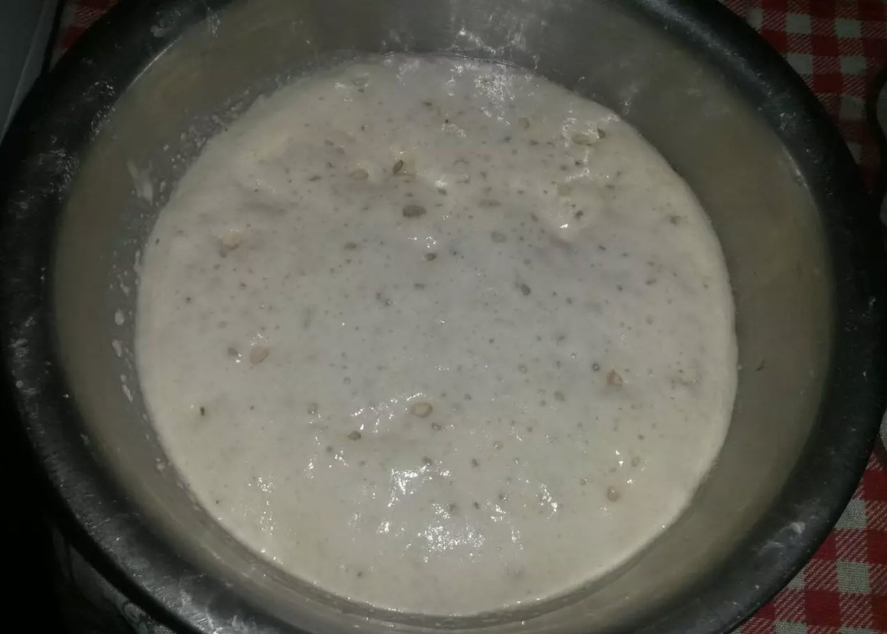
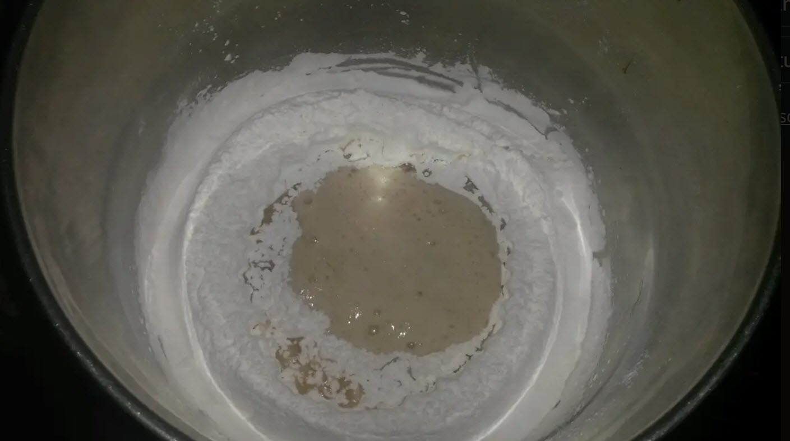
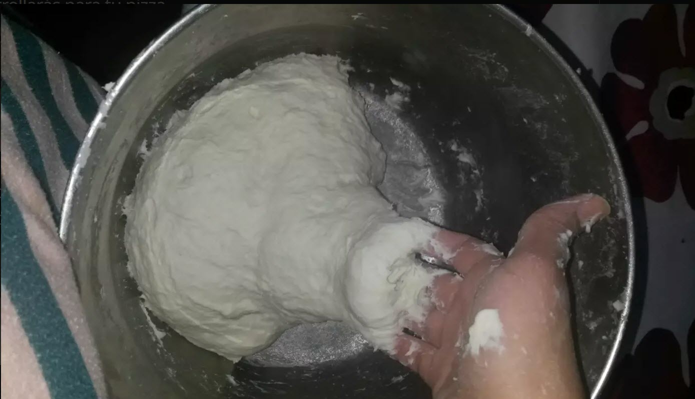
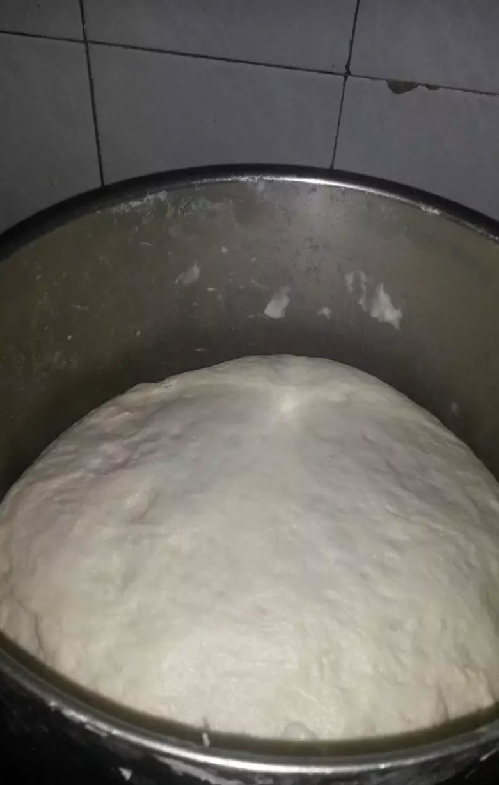
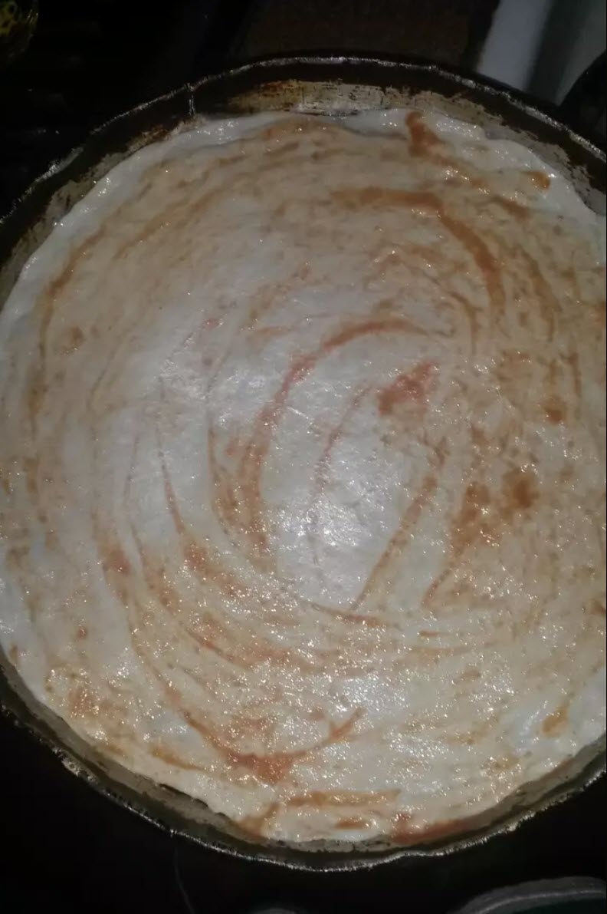
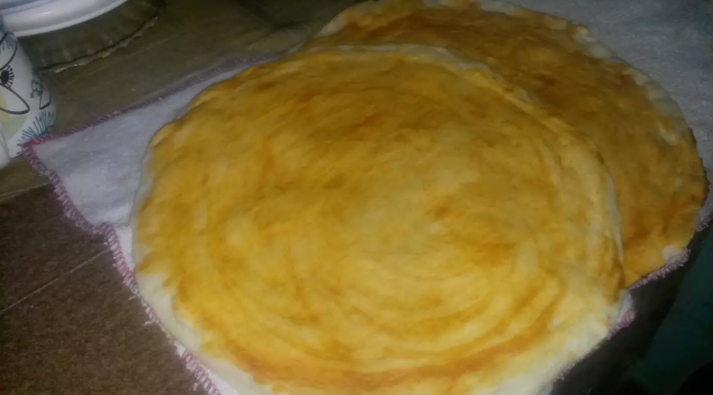

Masa de pizza fácil y casera
Ingredientes
- 75 minutos 5 unidades
- 1 kg Harina 0000
- 50 g Levadura Fresca o 13g de Levadura Seca (2cdas. Al ras)
- 50 cc. De aceite (8 cucharadas)
- 600 cc aprox. Agua tibia
- 2 cdas. De Sal (al ras)
- 1 cdita. Azúcar
- c/n Salsa o puré de tomates
Paso a paso
-

En un recipiente colocar la levadura fresca y desmenuzarla un poco o con las manos o directamente la levadura seca, agregarle 4 cucharadas del harina de la receta junto con la cucharadita de azúcar y 100cc (1/2 vaso) de agua tibia y mezclar muy bien hasta unir todo (tiene que quedar una consistencia ni muy espesa ni muy líquida) tapar y dejar reposar por unos 10' para activar la levadura.
-
En otro recipiente amplio colocar el harina formando una corona y añadir alrededor la sal (esto es para que no tome contacto directo con la levadura porque la "mata") y en el centro colocar la levadura ya activada y el aceite.
 -
Incorporar el agua tibia de a poco e ir uniendo ingredientes desde desde centro hasta lograr una masa chiclosa (se tiene que pegar un poco en las manos) si no te gusta esta textura para trabajarla agrega menos agua (con 450 a 500cc andarás bien. Todo depende como te guste el resultado final de una masa, más compacta o más aireada) Amasar con ganas por unos 20' aprox. Recordá que mientras más amases mejor miga desarrollarás para tu pizza.
 -
Una vez finalizado el amasado formar un bollo y untarlo con un poco de aceite tapar y dejar reposar por 40 a 50 minutos. Hasta que triplique su volumen.
 -
Pasado el tiempo de leudado desgasificar la masa (aplastarla con las manos y sacar el gas que produce la levadura) y dividir en 4 bollos (si elegiste hacer la masa más humeda te recomiendo este paso hacerlo untando las manos en aceite para evitar que se te pegotee) Para la cocción: aceitar una pizzera y estirar el bollo de masa desde el centro hacia los bordes y pincelar con salsa o puré de tomates. Llevar a horno fuerte (200 a 250°) por 10'.
 -
Y listo! Pre-pizzas listas para armar como más te gusten!
